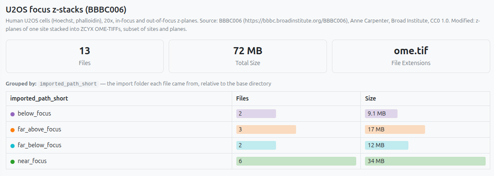
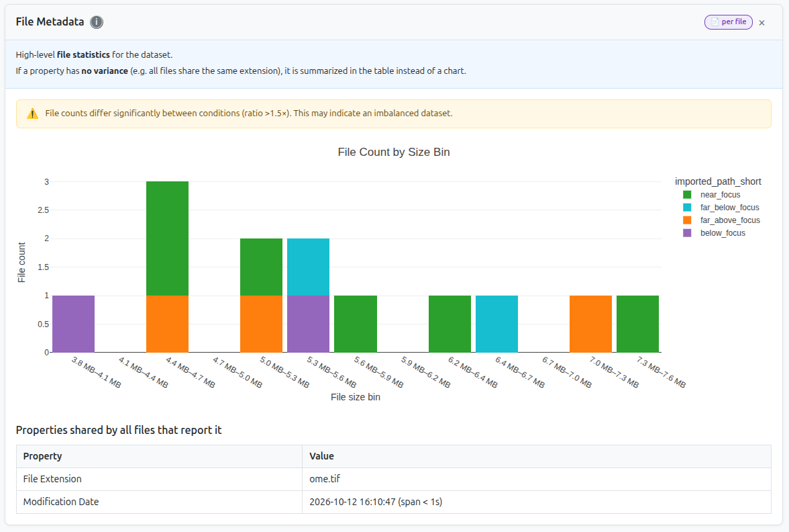
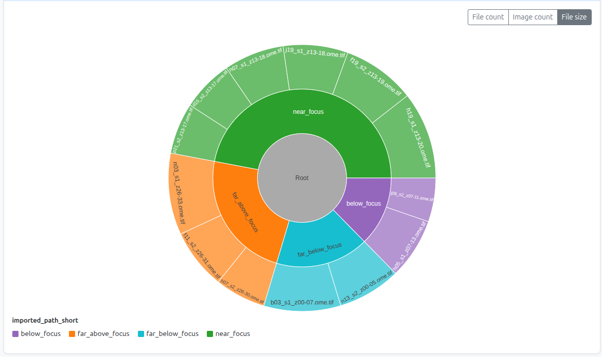
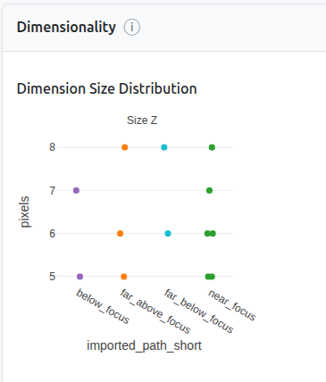
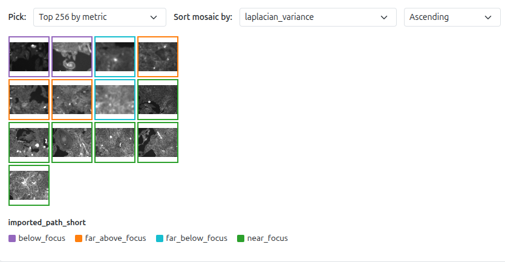
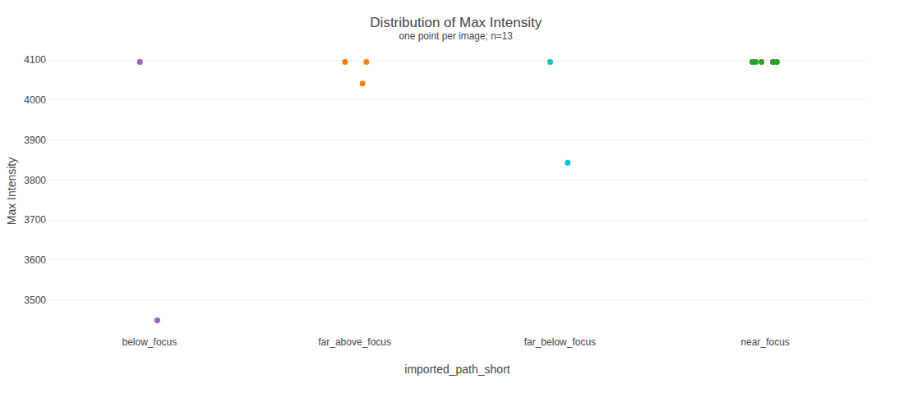
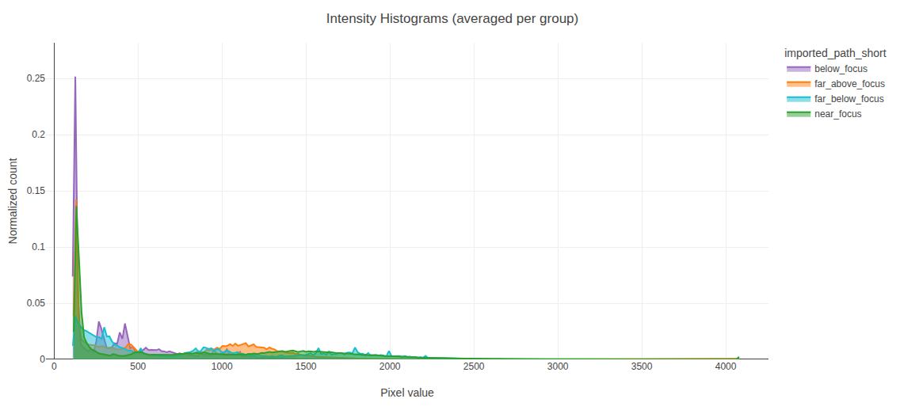
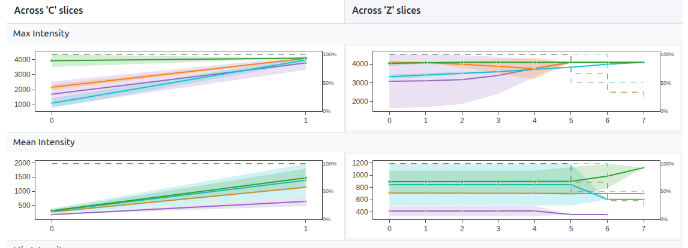
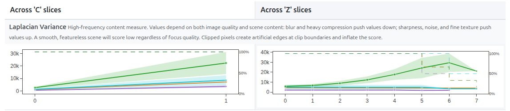

Exploring the Interactive Report
Open your interactive report in one browser tab and keep this page open in another. No PixelPatrol table of your own yet? Open the example report, used in this tutorial.
The example screenshots below are from a subset of the BBBC006 dataset (human U2OS cells, Hoechst and phalloidin channels, 20x) with four conditions: focus series acquired far below, below, near and far above the focal plane, each stored as a multi-channel .ome.tif stack. The uneven group sizes, varying Z size, 12-bit data stored in 16 bits and changing sharpness across Z make it easy to see what each widget catches.
A few things to know before you start:
- Some charts collapse into a table. If all your images share the same value for a property (e.g. they're all the same size, or all the same dtype), PixelPatrol shows a summary table instead of a chart.
- Widget availability depends on what was processed. Widgets that need data not collected simply don't appear. The colored pill on each card tells you what's required.
- Everything reacts to the sidebar. Grouping, filters, and dimension selectors update all widgets instantly - we'll cover the sidebar at the end.
Reading the cards:
bioio or tifffile)Each widget also carries a small scope badge telling you what one datapoint represents - hover it for details:
Overview and Full view
The viewer opens in Overview mode: a grid of tiles, each with a one-line summary. Click a tile to expand it, or switch to Full view with the toggle in the top right to see every widget at once.
Each widget has an ⓘ button that briefly explains what it shows and how to read it; a toggle in the topbar opens or closes all of them.
Opening your interactive report
This starts a local server with native DuckDB and opens the viewer in your browser - recommended for any non-trivial dataset. You can also go to pixelpatrol.app/viewer/ and drag your own .parquet in directly (runs in browser memory, so tables larger than a few GB may not load).
Useful launch flags:
pixel-patrol view results.parquet --group-by file_extension # start grouped differently
pixel-patrol view results.parquet --filter-col dtype --filter-op eq --filter-val uint16
pixel-patrol view results.parquet --dim z=5 # lock to a Z slice on load
pixel-patrol view results.parquet --significance # show stat brackets from the start
Widget walkthrough
Answer the three questions below and the cards for widgets that don't apply to your setup will dim out as you scroll through the walkthrough - so you can see at a glance which ones are actually relevant to you.
bioio or tifffile)?
Click the ✓ in the corner of each widget card to mark it as reviewed and track your progress through the walkthrough.
Your first sanity check: a summary for the whole dataset (files, images, total size, file extensions) - when grouped, a per-group breakdown table of file count and size.

near_focus holds several times more data on disk than the others. Uneven group sizes, visible before looking at a single pixel.A sortable, searchable table with one row per image, showing every column except thumbnails and other binary/array data. Click a column header to sort; press Enter in the search box to search by substring - across all columns for datasets under 10,000 images, or just path/child_id for larger ones.
File count and total size by extension, file size distribution, and a modification timeline.
🔬 How it's computed
mtime.
.ome.tif, so it appears in the "shared properties" table instead of a chart.An interactive sunburst of your folder hierarchy. A toggle lets you size the segments by file count or by total size - the screenshot below shows the by-size view. Only files that were actually scanned into the table are included. Click any segment to zoom in; click the center ring to zoom out.

Distribution of dtype and dim_order across groups, plus a summary table of other properties - ndim and pixel size, where available - for the cases where every file shares the same value.
dtype, dim_order, or ndim vary across your files, that points to inconsistent acquisition - possibly different instruments or different acquisition parameters - and is worth verifying before you compare groups. Mixed-dtype example: uint8 lives in [0, 255] while uint16 lives in [0, 65535], so a pixel value of 100 means something completely different in each.dtype, dim_order, and ndim across the whole dataset - format-level consistency confirmed.X/Y scatter plot (width vs. height, one point per image) plus strip plots for any non-spatial dimensions present (e.g. Z, T, C, S - names depend on your loader). Quickly reveals outliers and whether your images are consistently sized across groups.

A thumbnail grid - one patch per image, border color = group. Sort by any metric and your statistics become something you can actually look at and verify with your own eyes.
🔬 How it's computed

laplacian_variance ascending and the blurriest, most out-of-focus images float to the top.laplacian_variance ascending → blurriest images appear first. If they look visually out-of-focus, they are. This is the fastest path to finding focus-drift candidates for exclusion.bright_clipping_fraction descending to surface overexposed images. Sort by dark_clipping_fraction descending to surface images with heavy background or underexposure.Violin + box plots for four per-image statistics: mean_intensity, std_intensity, min_intensity, max_intensity. Each dot is one image; each violin is one group. Use the Slice by toggles above the plots to switch to one point per (image × dimension slice) instead.
🔬 How it's computed
np.nanmean over all pixels, pixel-count-weighted across 2D planes.std: pooled -
√(Σnᵢ(σᵢ² + (μᵢ − μ̄)²) / Σnᵢ) - accounts for both within-plane and between-plane variance.min / max:
np.nanmin / np.nanmax per plane, then min/max across planes.NaN pixels are excluded from all calculations.

max_intensity - most images peak at exactly 4095, the 12-bit ceiling, although the data is stored as uint16 (a 16-bit file would reach up to 65535). Only a handful of distinct values exist, so PixelPatrol shows raw points instead of a violin. Each dot is one image; hover to identify the file.max_intensity sitting exactly at 255 (or 65535) is worth a closer look - it can mean those images hit the sensor's ceiling and got clipped. Check the histogram for a spike at the max value to confirm real saturation (a single bright pixel can also legitimately land at 255), then verify visually in Image Thumbnails.mean_intensity within a single group: variable illumination, inconsistent staining, or genuinely variable signal.The mean pixel intensity histogram per group - a more in-depth look at whether your pixel intensity distribution looks the way you'd expect. If the dataset has both integer and float images, each type gets its own plot. For integer images, toggle between actual pixel values and a dtype-normalized range to compare across bit depths.
🔬 How it's computed

uint16 so in one plot - most pixels sit in a dark background peak around 130 (the camera offset, not 0), with a long tail toward the bright signal that ends at 4095 instead of spanning the 16-bit range. below_focus (purple) has the strongest background peak.Four quality metrics computed per leaf slice, aggregated by pixel-count-weighted mean. They surface blur, noise, and exposure clipping at the whole-image level - not localized defects. Only compare images at the same magnification and pixel size - laplacian_variance and spectral_slope are scale-dependent.
High-frequency content measure. Blur and heavy compression push values down; sharpness, noise, and fine texture push values up. A smooth, featureless scene will score low regardless of focus quality. Clipped pixels inflate the score.
🔬 How it's computed
left + right + up + down − 4 × center. This second-derivative filter fires strongly at edges and fine texture, near-zero in smooth regions. Variance of this response is the score. Clipped pixels create artificial high-frequency edges and inflate it - check clipping fractions when values seem unusually high.laplacian_variance ascending, and confirm visually. If they look out-of-focus, you may want to exclude them.Log-log slope of the radially averaged power spectrum, fit over the mid-frequency band (5–40% of Nyquist). Typical range: −2 to −4. Closer to 0 indicates noise or uniform content. More negative values indicate blur or stronger low-frequency dominance. Most interpretable when comparing images of similar content type.
🔬 How it's computed
Fraction of pixels at the dtype's minimum representable value (0 for unsigned integers; NaN for float). Detects underexposure, background, and nodata at the dark end.
🔬 How it's computed
iinfo(dtype).min (0 for unsigned integers, e.g. −32768 for int16) and divide by total pixel count.Fraction of pixels at the dtype's maximum representable value (integer types only; NaN for float, which has no fixed upper bound).
🔬 How it's computed
iinfo(dtype).max (e.g. 255 for uint8, 65535 for uint16) and divide by total pixel count. Sub-dtype clipping (e.g. 12-bit data in uint16 peaking at 4095, not 65535) is flagged by a separate warning below if max_intensity is below the dtype ceiling.How mean, std, min, and max change as you move along your non-spatial dimensions (e.g. Z, T, C, or S - the exact names depend on your loader) - averaged across all images in each group.

mean_intensity declining over T: photobleaching. Fluorophores are bleaching over the time course - any time-series analysis must account for this.std_intensity increasing over T: growing noise - sample movement, degradation, or instrument drift.How quality metrics change across your non-spatial dimensions (e.g. Z, T, C, or S - names depend on your loader). Best for detecting focus drift across a Z-like dimension or photobleaching effects on contrast over a T-like one.

near_focus (green) it climbs steeply to a peak at Z=6 and falls again, the signature of a stack passing through focus. The other groups stay low and flat by comparison.Build your own plot from any columns in the table - pick an X column, a Y column (or (count)), and PixelPatrol picks a sensible chart type:
- Two numerics → scatter
- Categorical × numeric → violin or bar (mean ± sd)
- Any column ×
(count)→ count bar - Two categoricals → count heatmap
Color by defaults to the app-wide group column, but you can color/split by any other column instead - or, for scatter plots, by a numeric column on a continuous colormap. Each plot has its own Slice by toggles and a per-image / per-slice badge, just like Pixel Value Statistics. Click ＋ Add plot for as many independent plots as you need.
.js file - drop it into an extension's viewer/ folder and list it in extension.json to make it a permanent part of your reports. See Create an Extension.Working with the sidebar
path (your -p conditions). Try file_extension, dtype, or any loader metadata column to ask different questions.Parquet: creates a new parquet file (PixelPatrol table) with only the filtered data. You can open it as an interactive report.
Common filter examples:
| Goal | Column | Op | Value |
|---|---|---|---|
| Only 16-bit images | dtype |
eq |
uint16 |
| One condition only | path |
eq |
condition_A |
| Sharp images only | laplacian_variance |
gt |
500 |
| Remove dark images | mean_intensity |
gt |
10 |
| Find saturated images | max_intensity |
ge |
254 |
| Exclude a format | file_extension |
not_contains |
.tif |
Saving filtered subsets: Save as CSV gives you the filtered data as a spreadsheet - the same table as the parquet, in a plain, human-readable format. Use it to build an include or exclude list for your pipeline, or just open it and explore the numbers yourself. Save as Parquet creates a new parquet file (PixelPatrol table) with only the filtered data. You can open it as an interactive report - the standard way to share a curated, clean version of your dataset. See the privacy policy for what's included before sharing it.